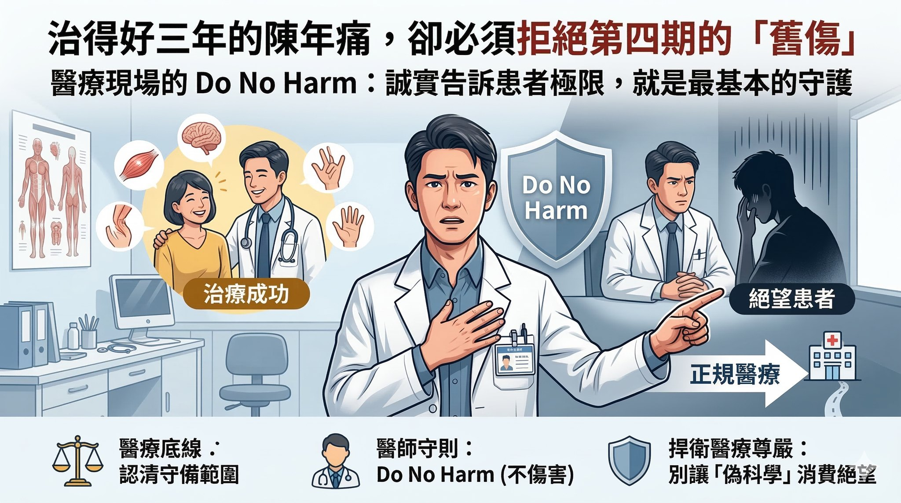

治得好三年的陳年痛，卻必須拒絕第四期的「舊傷」：醫療現場的 Do No Harm
【 治得好三年的陳年痛，卻必須拒絕第四期的「舊傷」：醫療現場的 Do No Harm 】
這週的診間，像是在洗三溫暖。跟這禮拜的股市一樣！
診療的過程，迎來了許多振奮人心的時刻：有困擾兩年的髖關節痛，在精準評估後一次搞定；也有痛了三年的薦髂關節舊疾，透過肌筋膜乾針與徒手技巧，完美拆彈。看著患者如釋重負的笑容，是身為醫師最大的成就感。
但同時，我也經歷了令人極度沮喪、深感無力的時刻。
一位癌症第四期、癌細胞已轉移至內臟與骨骼的患者來到診間。
當年沒有接受癌症正規治療，選擇民間替代性療法，並長年忍受著全身多處的疼痛，滿懷希望地看著我，希望我能幫她處理腰部與小腿的「舊傷」與「筋膜沾黏」。
－
⚖️ 醫療的底線：是說出殘酷卻必要的實話
面對這位走投無路的患者，我大可以順著她的話，幫她放鬆肌肉、調整骨架，讓她當下覺得舒服一點。但我沒有。
我很直接、甚至有些殘酷地告訴她：
「即使我今天幫妳把錯位的骨架調正、把緊繃的張力全數解開，妳回到家依然會痛起來。因為現在讓妳痛的根本原因，不是什麼舊傷或沾黏，而是骨頭裡的病灶，應該好好接受癌症的正規治療。」
作為一位專精於結構與肌筋膜的醫師，必須清楚自己的「守備範圍」。
面對癌症轉移，任何宣稱能靠推拿、整復或單純喬骨來「治本」的說法，都是不切實際的。我懇切地勸她，把心力與資源留在正規的中西醫合併治療上。至於那些號稱加持過的「能量水」、來路不明的昂貴保健品，真的不要再浪費錢了。
－
🛡️ 捍衛醫療尊嚴：別讓「偽中醫」消費患者的絕望
在病史詢問中，聽到她曾求助於許多民間鄉野的「傳說高人」，我的內心既心痛又憤怒。
有太多有心人士利用患者「尋找最後一絲希望」的脆弱心理，大發災難財。他們隨便掛個聽都沒聽過的「XX師」頭銜，扯一點經絡、五行、八卦，就宣稱自己「結合中醫獨創療法」，甚至大言不慚地向末期患者「保證治癒」。
我們這些受過嚴謹現代醫學與傳統中醫訓練、通過國家考試的醫療人員，面對生命都必須保持敬畏，從不敢輕言「絕對」。
最荒謬的是，當這些人賺得盆滿缽滿，最後病情惡化、錯過黃金治療期的黑鍋，卻往往留給了正規的「中醫」來揹。
－
👨⚕️ 醫師的最高守則：Do No Harm
醫療人員是有社會責任的。
有機會力拼的，我們絕不退縮；但超出守備範圍的，就必須果斷轉介。不要因為個人的傲慢、無知或利益，延誤了患者的病情。
醫療現場的第一原則是 "Do no harm"。
對我而言，認清自己的實力與能耐，誠實地告訴患者極限在哪裡，不給予虛假的希望，就是落實「不傷害」的最基本底線。
願每一位正在與疾病抗爭的生命，都能遇到誠實、專業，且願意為你守住底線的醫療人員。
本文所分享之臨床案例皆已進行去識別化與隱私保護處理，內容僅供醫療衛教觀念交流與參考。每位患者的身體結構、疾病進程與疼痛成因皆屬獨特個案，治療效果因人而異。若您有任何身體不適、急性或慢性疼痛，請務必尋求受過正規訓練之專業醫師進行當面評估與完整鑑別診斷，切勿輕信偏方或延誤黃金就醫時機。
#DoNoHarm #醫療底線 #中西醫結合 #中醫徒手 #乾針 #癌症照護 #醫療倫理 #拒絕密醫 #醫病關係
太初中醫診所 東門中醫
中醫師 黃彥鈞
